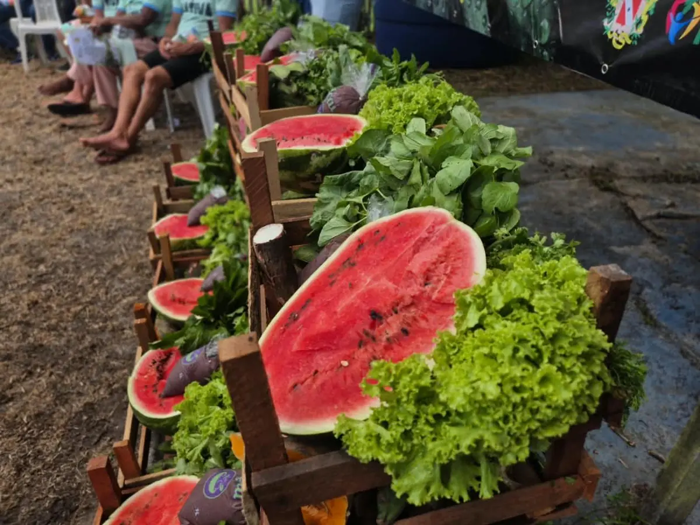
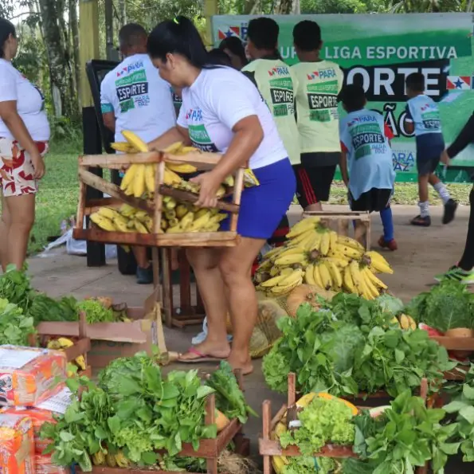
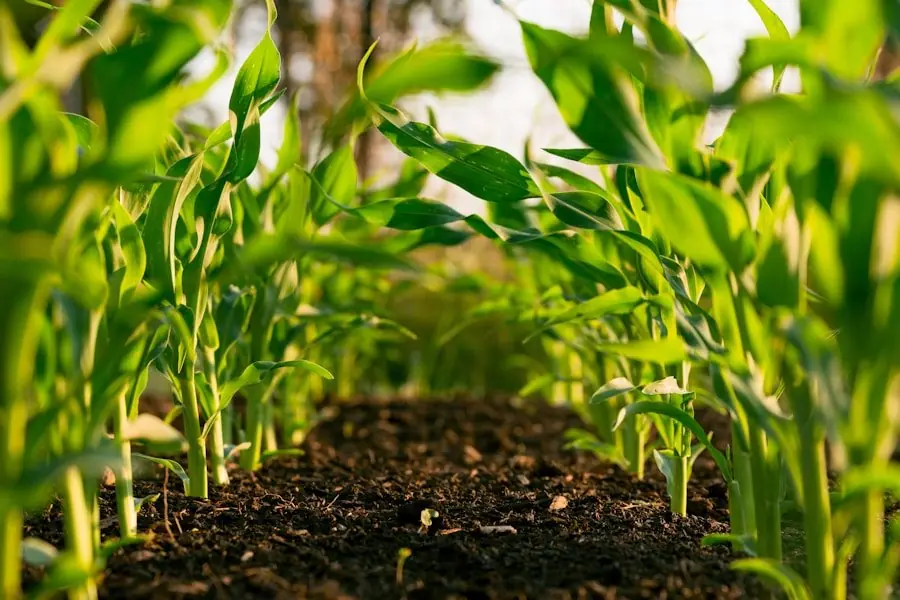

Sobre a AgroVisão
Transformando conhecimento técnico em desenvolvimento sustentável para a agricultura amazônica.


Uma consultoria dedicada ao desenvolvimento sustentável da Amazônia
A AgroVisão é uma consultoria técnica especializada em desenvolvimento rural, regularização fundiária e gestão ambiental na Amazônia Legal. Atuamos ao lado de produtores rurais, associações, cooperativas, ONGs e instituições públicas, oferecendo soluções completas e alinhadas às exigências legais vigentes.
Nossa equipe multidisciplinar combina formação técnica de excelência com profundo conhecimento do território amazônico e das políticas públicas voltadas ao desenvolvimento da agricultura familiar e empresarial.
“Elaborando sonhos no presente, construindo o amanhã a partir da melhor Visão.”AGROVISÃO — CONSULTORIA AGRÍCOLA
O que fazemos
Consultoria Agrícola
Diagnóstico, planejamento e assistência técnica para otimização da produção agropecuária.
Saiba mais →Gestão de Projetos
Coordenação completa de projetos rurais do planejamento à entrega, com rastreabilidade e relatórios técnicos.
Saiba mais →Regularização Fundiária
Titulação, legalização e regularização de imóveis rurais conforme legislação agrária federal e estadual.
Saiba mais →Licenciamento Ambiental
EIA/RIMA, licenças ambientais e acompanhamento junto à SEMAS-PA, IBAMA e órgãos estaduais.
Saiba mais →Georreferenciamento
Levantamento topográfico e certificação de imóveis rurais conforme normas do INCRA e SIGEF.
Saiba mais →Projetos Rurais
Elaboração de projetos agropecuários, planos de negócios e sistemas de produção integrados e sustentáveis.
Saiba mais →Agricultura Familiar
Assistência técnica especializada para pequenos produtores, assentamentos e comunidades rurais amazônicas.
Saiba mais →Captação de Recursos
Acesso a crédito rural, PRONAF, editais públicos e programas de fomento para projetos agropecuários.
Saiba mais →Como trabalhamos
Diagnóstico
Avaliação técnica completa da propriedade e das necessidades do produtor.
Planejamento
Elaboração do plano de ação com metas, prazos e recursos necessários.
Regularização
Adequação documental, fundiária e ambiental conforme exigências legais.
Execução
Implementação das soluções técnicas com equipe multidisciplinar em campo.
Acompanhamento
Monitoramento contínuo, relatórios periódicos e suporte técnico permanente.
Resultados
Entrega certificada com documentação completa e impacto mensurável.
Por que escolher a AgroVisão
Mais de 4 anos consolidando nossa presença no setor agropecuário da Amazônia com resultados técnicos comprovados.
Expertise técnica comprovada
Equipe de engenheiros, geógrafos e advogados especializados em legislação agrária e ambiental amazônica.
Atuação em políticas públicas
Experiência consolidada em projetos junto ao INCRA, SEMAS, BASA, BNDES e programas federais de desenvolvimento rural.
Presença na Amazônia Legal
Conhecimento profundo das particularidades fundiárias, ambientais e sociais da Amazônia brasileira.
Equipe multidisciplinar
Profissionais de diferentes áreas trabalhando de forma integrada para soluções completas e consistentes.
Desenvolvimento sustentável
Compromisso com práticas que aliam produtividade, preservação ambiental e desenvolvimento das comunidades.
Parcerias institucionais
Rede consolidada de parcerias com associações, cooperativas, prefeituras e instituições de pesquisa agropecuária.
Nossa experiência em campo
Atuamos em toda a extensão da Amazônia Legal, de comunidades rurais a grandes propriedades agropecuárias.


